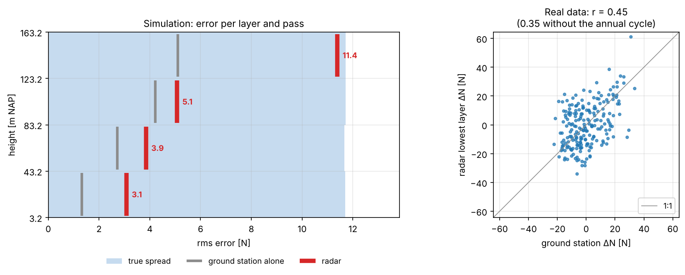
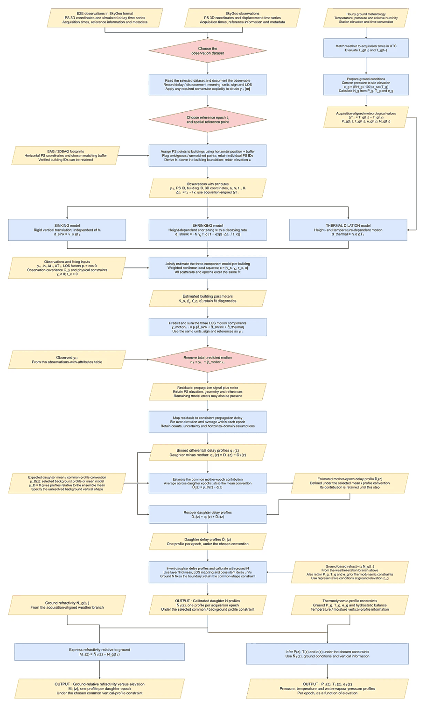
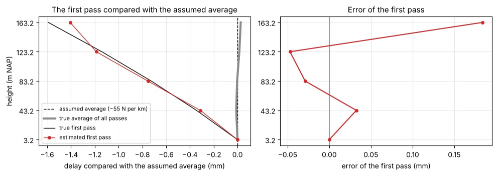
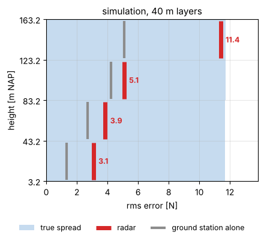
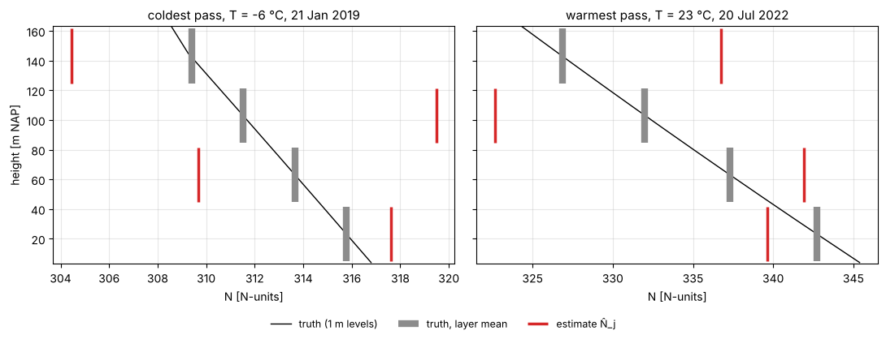
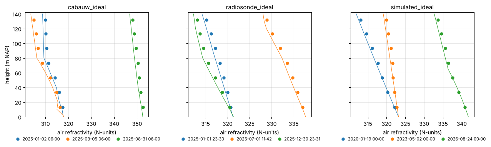
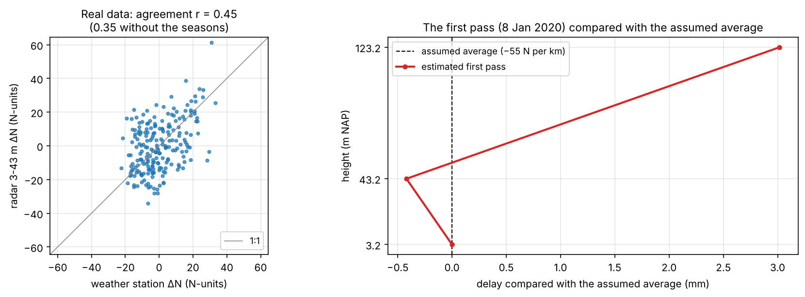
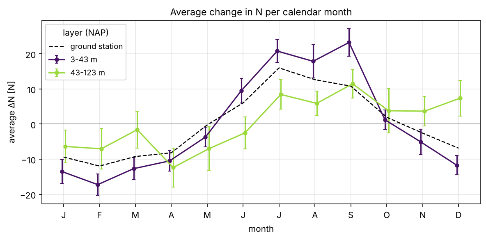
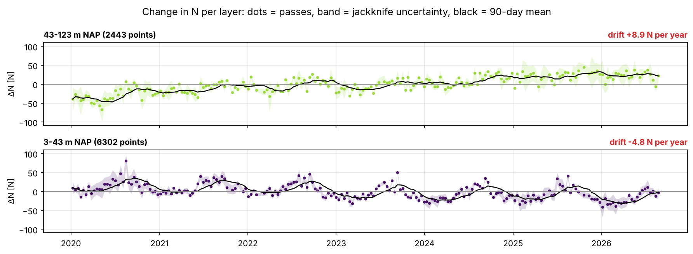
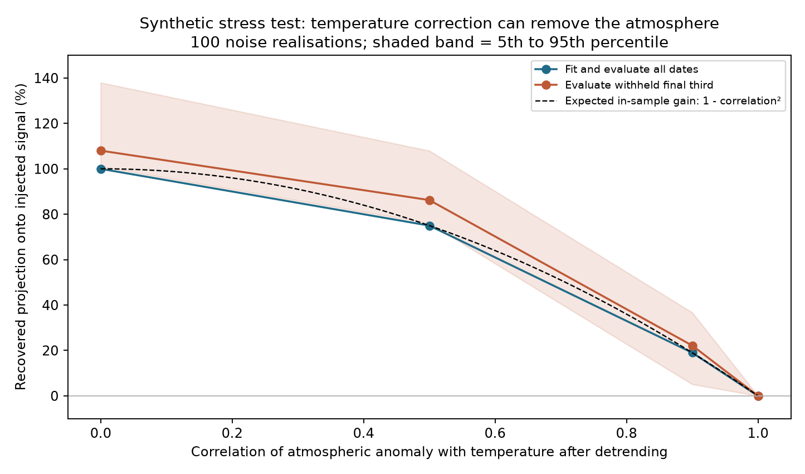

Estimation: from radar points to a profile of the air
The core of the project. The radar measures how far thousands of points on buildings move between satellite passes. The estimation separates what the buildings did from what the air did, and turns the air part into the refractivity of the air in a few height layers, for every pass on its own.
Status on 12 October 2026. Method as in the team's estimation flowchart of 12 October; settings and their evidence in the team's decision log.

In short
- The maths works. On simulated data with only air in it, the profiles come back to a few tenths of an N-unit from pass to pass. Below
- The buildings are the hard part. Buildings grow when warm, and a tall building grows more, which looks just like the air. Fitted naively, the expansion term takes about 9 N of air signal out of every layer. Our fix, the air prior, gets the expansion right and the error down to the noise limit, 3 to 5 N per 40 m layer. Below
- On real data the lowest layer sees the air. Its changes follow the weather station 7 km away with r = 0.45 (0.35 once the yearly cycle is removed). Higher layers still carry building movement. Below
- Try it yourself. The simulator lets you switch noise and building movement on and off and see what the estimation recovers.
The steps, one flowchart
The estimation follows one flowchart, agreed by the team on 12 October. In words:
- Read the radar data
Every point's change in distance to the satellite, per pass, relative to the first pass (the mother) and to the street.
- Match the weather
For every pass, the temperature, pressure and humidity at Rotterdam airport at the overpass time, about 06:08 UTC, and from those the refractivity of the air at the street.
- Assign points to buildings
Using the building outlines of the national register (BAG) and their roof heights (3DBAG). Each building moves in its own way.
- Remove what the buildings do
Per building: sinking, slow shrinking, and growing when warm. What is left is the air plus noise.
- Turn the rest into the air, layer by layer
Average per height layer and per pass, recover the first pass with one stated assumption, and convert the delay across each layer into its refractivity.
- Tie it to the ground
The weather station sets the average level; the radar gives the change from pass to pass. Optionally, temperature and humidity per layer under stated assumptions.

Telling the buildings from the air
A building gets taller when it is warm: a few millimetres at the top of a tower over a summer. The air changes with the weather too, and in a way that also grows with height. Seen from the satellite, the two look the same. If the expansion is simply fitted, it takes the part of the air that follows temperature with it.
The fix is to use what we already know. The weather station predicts how much the air should change on each pass. We take that prediction out before fitting the buildings and put it back after. The buildings can then no longer swallow it, and the radar adds only what the weather station did not predict.
Per building b, point i at height hi above the foundation and pass j: y_ij = cos θ [ v_s Δt_j − h_i γ0 τ_c (1 − e^(−Δt_j/τ_c)) + h_i α ΔT_j ] + c_i + ε_ij, weighted least squares with γ0 ≥ 0 and τ_c searched over 0.25 to 50 years. The thermal term and an air anomaly that is uniform with height are both linear in height, so per building they are not separable. Air prior: before the fit, subtract −10⁻³/cos θ · (z_i − z_0) · δN_g(t_j) (the delay of the ground station's N anomaly, uniform with height); after the inversion add δN_g(t_j) to every layer. The part the motion terms cannot absorb is restored exactly (tested); the part they would absorb is supplied by the station. A prior α fixed 30 % off costs as much as fitting without the air prior. A second variant, J. de Ruiter's, drives the expansion with a 72-hour memory of the hourly temperature and puts back only the air that follows KNMI pressure and temperature; it agrees within about 1 N (the simulator has both).
The one thing the radar cannot see: the first pass
The radar only measures changes: every pass compared with the first. Add the same profile to every pass and nothing the radar sees changes. So one assumption is needed, and we state it: on average over all passes, the air gets thinner with height by 55 N-units per kilometre. That is what the Cabauw mast measures at dawn (60 N/km) and the De Bilt soundings at night (53 N/km). The textbook value of 40 N/km holds higher up and at midday, not at 6 in the morning near the ground.

The simulation: a city where we know the answer
The simulation starts from an atmosphere we choose, works out exactly what the radar would measure on a synthetic city, adds everything that makes real data hard, and hands that to the estimation. Because the true air is known, it shows what the method can and cannot recover.
Status on 12 October 2026: running end to end, from the atmosphere to the radar measurements, and used to test every step of the estimation.
Why simulate
In the real data the air is mixed with buildings that sink and expand, with noise, and with an unknown reference. There is no measurement of the true profile at the moment of each pass. A simulation lets us switch each of those on and off and compare the result with the truth. Try it in the simulator.
From air to radar measurement
- The scene
A synthetic city of 16 box buildings, two of them towers of 100 to 150 m, with 12 000 radar points on facades, roofs and the street, on the 213 real TerraSAR-X pass dates of 2020 to 2026, the same passes as the real data.
- The air
A profile of pressure, temperature and humidity for every pass, on 1 m levels. Three choices: air built from the KNMI weather of each pass, the De Bilt balloon soundings of 2025, or the Cabauw tower's measured profiles.
- From air to delay
The refractivity of every level, the delay it causes along the radar's slanted line of sight, and the delay at the height of every radar point.
- What makes it hard
Ground and buildings sink and shrink, buildings expand when warm, every point has a small position error, and 2 mm of noise per point and pass. Each can be switched off.
- The radar's view
Every point compared with the street and every pass with the first: the double differences, in the same file layout as the real satellite data.
Code: 06_simulation/ in the team repository, run_pipeline.py runs steps 0 to 7 (scene, profiles, refractivity (Smith and Weintraub, three terms), delay profile, delay at points, line of sight at 23°, nuisances, single-mother stacking). Nuisances in step 6: sinking and shrinking (−2.5 mm per 100 m per year), thermal expansion α η = 1 × 10⁻⁵ /K × 0.7 driven by the KNMI daily temperature with a 5-day lag, cross-range error (1 m height error × simulated perpendicular baseline), white noise 2.07 mm (the residual level measured on the real stack). Every run can write three files with the same passes: the radar observation (simulated_fullpixel_<name>.csv), the ground weather at 0 m (ground_<name>.csv) and the true N, P, T and e on 1 m levels to 140 m (solution_<name>.csv).
What the simulation has shown so far
- With air only, the radar's view is exactly the double-differenced air delay (checked to 0.00001 mm), and the estimation gets the air back to a few tenths of an N-unit from pass to pass. Estimation
- With everything switched on, a naive fit of the building expansion takes about 9 N of air signal out of every layer; the estimation's air prior fixes that. Estimation
- The remaining error is noise: 3 to 5 N per 40 m layer with 12 000 points and 2 mm per point. Estimation
- The simulated air drops by about 58 N per km near the ground on average, like the measured air at dawn: the reason the estimation now assumes 55 N/km.
Try it: the simulator
The simulator shows, for every combination of noise level, building movement, thermal expansion and position error, what the estimation recovers. Every combination was run with the team's code: simulation first, then estimation.
Limits
- The city is a grid of boxes; the real Kop van Zuid has 11 usable buildings of different shapes.
- The simulated buildings follow one temperature memory (5 days); real buildings may respond differently.
- The air is horizontally uniform: the same profile above every point.
Tested on the simulation
The team's simulation builds a fake city of 16 buildings with 12 000 radar points, fake air from the real weather of 213 satellite passes (2020 to 2026, the same passes as the real data), and everything that makes the real data hard: sinking, shrinking, thermal expansion, a position error and 2 mm of noise per point. Because the true air is known, every step can be checked.

The radar recovers the air to 3 to 5 N per layer, against an air that varies by about 12 N. That is the noise limit of this many points. It is not yet better than the weather station alone, because in this simulation the air changes almost the same way at every height, which the station predicts well. With one thick layer from the street to the top, the radar does beat the station: 1.1 against 3.0 N.
A better question than "how large is the error" is "does the radar beat the station". The team now reports the skill against the station per layer: 1 minus the radar's squared error divided by the station's. Above 0 the radar adds something. For the 40 m layers on their own it is below 0 in every layer; for the one thick layer it is +0.87. Combining the two, starting from the station and moving only as far as the radar is reliable, beats the station in every 40 m layer (1.2, 1.6, 2.5 and 2.8 N, skill 0.2 to 0.7). That combination is a tool in the package, not yet the team's default.

Settings: fitted α with the air prior, 40 m layers from 3.2 m NAP, ground calibration of the level only (the radar keeps its own value per pass; calibrating every pass to the station spreads the lowest layer's error upward: 5.9 to 16.7 N in the second 20 m layer), background −55 N/km, KNMI 344 at 06 UTC. 4 985 facade points on the 6 buildings that pass the 60-point, 20 m span gate. For white noise the error of a layer is about σ_N ≈ k σ_point cos θ / (10⁻³ Δz √n) with k ≈ 2 to 2.5; at 20 m layers it is 6 to 15 N, which is why 40 m layers are used.
The maths alone is exact
The simulation team also delivered runs with air only: no building movement, no noise, with three different atmospheres (the Cabauw mast, De Bilt soundings, and air built from the weather record). They test the second half of the method by itself.

From pass to pass the estimate is off by at most 0.25 N. What is left is the assumption about the first pass: at most 1.2 N with 55 N/km, against up to 2.9 N with the textbook 40 N/km. The weather station alone is off by up to 5.5 N here.
First results on the real data
The same steps on the TerraSAR-X data of Kop van Zuid: 213 passes from January 2020 to August 2026, 8 745 radar points on 11 buildings, two layers: 3 to 43 m and 43 to 123 m above sea level. Everything shown is a mean over thousands of points per layer and pass.
The full, interactive view of these results is under Results; below is the short version.
All 11 buildings expand when warm, as they should. The only independent check we have is the weather station: does the radar's lowest layer move with it?



So the lowest 40 m sees real air, with a lot of noise; the upper layer is not usable yet. Whether the radar resolves structure within the lowest 100 m cannot be tested with existing data: the soundings have no level below about 100 m, and no other profile overlaps in time. That needs a measurement over Kop van Zuid at about 06 UTC on a few pass dates.
Sign of the export: positive towards the satellite, from four independent checks (SkyGeo's own velocity column, the summer height pattern, all 11 buildings expanding when warm, the sign of the boundary check). Reference: the 499 ground points both processings share. Buildings: BAG outlines with a 5 m facade buffer and a 3DBAG roof check. Median fitted expansion 3.0 × 10⁻⁶ /K with the air prior (5.0 without). Boundary check made without the air prior, since that puts the station's anomaly into every layer. Layer uncertainty (jackknife over buildings) 8.8 and 10.3 N; the formal error is 3 to 4 times smaller because buildings scatter as a whole.
The choices we made
| Question | Choice | Why |
|---|---|---|
| Sign of the radar data | positive towards the satellite | four independent checks agree |
| Building expansion | fitted per building, with the air prior | gets the true expansion back on the simulation |
| The first pass | average decrease of 55 N per km | measured at dawn at Cabauw and De Bilt |
| Tie to the ground | the station sets the average level only | tying every pass spreads errors upward |
| Overpass time | 06 UTC | orbit calculation: 06:08 UTC |
| Weather station | KNMI 344, Rotterdam airport | the closest one that measures temperature, pressure and humidity |
| The zero (reference) | 477 ground points both processings share, without sinking ground | a subsiding parking lot sinks about 5.5 mm per year; ground like that is left out (the result does not change) |
| Layer thickness | 40 m | 20 m layers are limited by noise |
Limits
- On the simulation the radar is at its noise limit and not yet better than the weather station per 40 m layer.
- On the real data both layers drift over the years: building movement that is not fully removed.
- The vertical structure of the real profile is not validated: no profile measurement overlaps the passes.
- The absolute level rests on one assumption about the average profile, uncertain by about ±1.2 N at 130 m.
- The sign of the export is inferred, not yet confirmed by SkyGeo.
Earlier: the pilot of 30 September
The first pilot showed two things that still hold. The choice of reference changes the zero but not the height contrast the method relies on. And a correction that removes everything linked to temperature also removes air that follows temperature: with a correlation of 0.9, only 19 % of a known air pattern survived. The air prior above is the answer to that second finding.

Reproduce
The code is in the team repository (private during the course): the package 04_python/estimation/, the notebook 03_notebooks/07_estimation/estimation.ipynb that follows the flowchart step by step, and the decision log 04_python/estimation/DECISIONS.md.